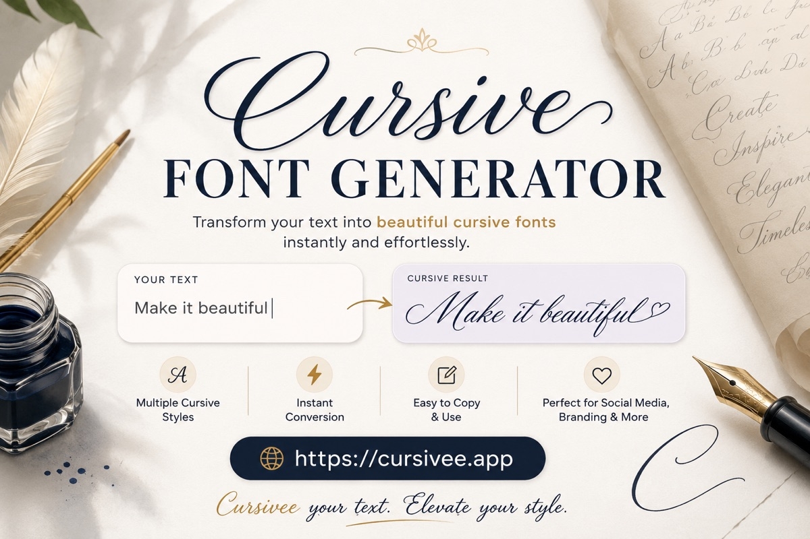

No style matches that name.
Cursive text generator
Turn any text into cursive letters you can copy and paste. Type below and get 21 free cursive fonts — script, bold script, Old English and more — ready for Instagram, TikTok, Discord or any app that only accepts plain text.
- 21 cursive styles
- Free, no sign-up
- One-click copy
- Works offline
How to use the cursive text generator
- Type your text. Enter a name, a word or a whole caption in the box at the top. All 21 styles update as you type.
- Choose a style. Scroll the list or filter it by name. Add an ornament such as ✧ or ♡, change the preview size, or star a style to pin it to the top.
- Copy and paste. Press Copy, or tap the converted text itself, then paste it into your bio, caption or message.
What is cursive text?
Cursive text is ordinary writing converted into Unicode script letters — characters such as 𝒜, 𝓑 and 𝒸 that look handwritten. Because they are characters rather than a font, they keep their shape when you copy and paste them into apps that have no font menu.
A font lives inside the app you are using, so it disappears the moment your words leave it. Script letters are different: Unicode gave them their own permanent codes, originally for mathematicians who needed a script 𝒜 that means something other than a plain A. The style is part of the text, so a cursive bio still looks cursive on someone else's phone.
21 cursive font styles to copy and paste
The first group is the handwritten look most people come for. The rest are the fancy text styles usually used alongside it, so you do not need a second tool.
| Group | Styles | Example |
|---|---|---|
| Cursive & script | Script, bold script, italic, bold italic, sans italic, sans bold italic | ℋℯ𝓁𝓁ℴ · 𝓗𝓮𝓵𝓵𝓸 |
| Blackletter | Old English, bold gothic, double-struck | ℌ𝔢𝔩𝔩𝔬 |
| Weights | Bold serif, sans, sans bold, monospace | 𝐇𝐞𝐥𝐥𝐨 |
| Blocks & bubbles | Bubbles, filled bubbles, squares, filled squares, wide | Ⓗⓔⓛⓛⓞ |
| Effects | Strikethrough, underline, slashed | H̶e̶l̶l̶o̶ |
Want single letters instead of a phrase? The list works as a cursive alphabet — type one letter and see it 21 ways — or use the cursive alphabet A to Z, laid out ready to copy.
Where you can paste cursive text
Cursive text works almost anywhere that accepts plain text. As a rule of thumb:
- Works well: Instagram bios and captions, TikTok bios, Discord messages and server names, posts on X and Facebook, WhatsApp and iMessage chats, YouTube titles and comments.
- Test first: usernames and handles. They are the strictest field on every platform, and some strip these characters, swap them for plain letters or reject the entry.
- Avoid: anything that has to be searched for or typed back — your real name, email addresses, links.
The guide to cursive text in an Instagram bio goes through each field one by one. If the caption is going on a Reel you want to keep a copy of, ReelsDL is a free Instagram video downloader that saves Reels and video posts.
Tips and limits
- Keep the important words plain. Screen readers read script letters as maths symbol names or skip them entirely. Use cursive for flair, and keep your name and anything that matters in ordinary letters. More in fancy text and screen readers.
- Numbers stay plain in script styles. Unicode has no script digits, and a few alphabets have gaps. Characters without a cursive form pass through unchanged — no generator can invent them.
- Shapes vary by device. Each phone draws these characters with its own fonts. If you see boxes or question marks, read why fancy text shows up as boxes.
- Latin letters only. Unicode has no script alphabet for Cyrillic or other non-Latin writing, so Russian text, for example, passes through unchanged.
- Not a signature or a tattoo font. The output is text, never an image or font file, so it cannot make a signature for a document or a handwriting practice sheet. For a tattoo, take a real typeface to your artist, not a screenshot.
- Private and offline. Every conversion runs in your browser. Nothing you type is sent or stored, and the page keeps working without a connection once it has loaded.

Cursive text generator FAQ
How do I write in cursive with this generator?
Type in the box at the top of the page. Each letter is swapped for a Unicode script letter as you type, in 21 styles at once. Pick the one you like, press Copy, and paste it anywhere that accepts plain text.
How do I copy and paste cursive text?
Press the Copy button beside any style, or tap the converted text. The cursive letters are now on your clipboard as ordinary text. Open the app you want, long-press or right-click in the field, and choose Paste.
How do I get a cursive font on Instagram, TikTok or Discord?
Those apps do not let you choose a font, so you paste cursive characters instead. Copy a style here and paste it into your bio, caption or message — that works almost every time. Usernames are stricter: some platforms strip, replace or reject these characters, so paste a short test first.
How do I write my name in cursive?
Type your name in the box and every style updates instantly, so you can compare script, bold script and Old English side by side. Copy the one you like. There is no form to submit, and the result pastes into a profile or caption as ordinary text.
Can I make a cursive signature with this?
Only the look of one. The generator gives you cursive text characters, not a handwritten signature image. For signing a document you still need a drawn signature or an image file.
Is this a cursive font generator?
Not strictly — and that is why it works. A font is a set of drawings your app chooses. These are Unicode characters: 𝒜 and A are as different as A and B, each with its own permanent code. Because the difference lives in the text rather than in a style setting, it survives being pasted into apps that never offered a font menu.
What is the best cursive font generator?
It depends on what the letters are for. For text you paste into a bio, caption or chat, a Unicode cursive generator like this one is the right tool, because the style travels with the characters. For print, a logo or a tattoo, install a real cursive font instead — these letters are drawn by whatever font the reader's device has.
Does it work on iPhone and Android?
Yes. It runs in any modern browser on iPhone, Android, Mac, Windows or Chromebook, with nothing to install, and keeps working offline once loaded. The exact letter shapes depend on the fonts of the device displaying them, so they differ slightly between phones.
Why did some of my letters or numbers not change?
Because that character does not exist in Unicode. These alphabets were added for mathematicians and typesetters, and a few have gaps — the script styles have no digits, for example. Anything without a cursive form passes through unchanged.
Why does my cursive text show up as boxes or question marks?
The device showing it has no font for those characters, or the app has replaced them. The sender cannot fix it from their side. The guide to fancy text showing as boxes explains each symptom and which styles are safest.
Is it free, and does it keep what I type?
It is free, with no account and no limit. Every conversion runs in your own browser, so nothing you type is sent anywhere, logged or stored. The privacy policy has the details.
More free text generators
From the blog
- 𝓎ℴ𝓊𝓇 𝒷𝒾ℴ How to put cursive text in your Instagram bio Which fields accept cursive on Instagram, TikTok, Discord and X — and which strip it.
- 𝒜 ℬ 𝒞 The cursive alphabet, A to Z, to copy and paste All 52 letters in three styles, and the eleven that never quite match the rest.
- □□□ ? Why fancy text shows up as boxes or question marks Three different symptoms, three different causes, and which styles are safest.
- 𝓱 ≠ h Can screen readers read fancy text? What cursive Unicode sounds like read aloud, and six rules for using it considerately.
- z̹̓a̘ͬĺ̘g͍͒o͉ͦ What is Zalgo text, and how does it work? The mechanics of glitch text, where the name came from, and how to strip it back out.